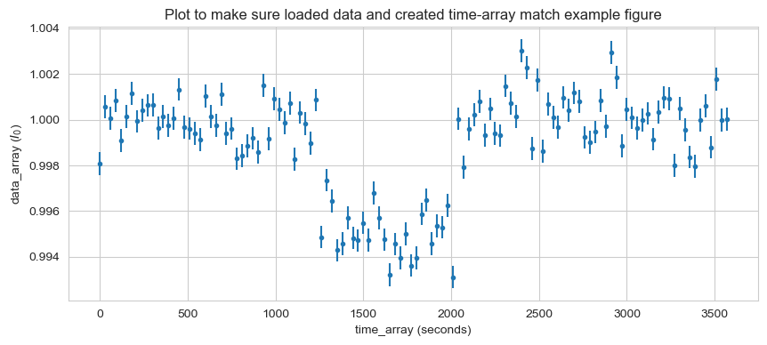

# Libraries
import numpy as np
import matplotlib.pyplot as plt
import pandas as pd
import random
from scipy.stats import chi2
import os,sys
# import helper script file
## change working directory
os.chdir("C:/Users/rokka/GH-repos/GitHubPages/Code-Reference-Notebook/CU-Boulder/AstroPhys/HW")
## import my own code
import hw_helper_func2 as hf # this is my own code I made (for probability/distribution fucntions, etc.)ASTR 5550: HW4
(JK note: To view the code with the functions I made myself to (hopefully) help with all assignments click here)
1. Combining Poisson Distributions
Given two Poisson distributions: \[P(x,\mu_A) = \frac{\mu_A^x}{x!}e^{-\mu_A} \text{ and } P(x,\mu_B) = \frac{\mu_B^x}{x!}e^{-\mu_B}\] Show that they combine to a Poisson distribution: \[P(x,\mu_C) \text{ where } \mu_C = \mu_A + \mu_B\]
Hint: For any given integer \(x\), the one must sum all possibilities of \(P(i,\mu_A)P(x-i,\mu_B)\).
2. Supernova Light Curve
After a supernova reaches its maximum brightness, the light curve exponentially decays as do the radioactive materials. The decay time can tell us its type. Examine the light curve below.
\[I = [0.921, 0.704, 0.623, 0.550, 0.426, 0.332, 0.258, 0.208, 0.143, 0.130, 0.137, 0.103, 0.058, 0.070, 0.042, 0.060, 0.022, 0.022, 0.011, 0.015]\] \[ \sigma = [0.026, 0.048, 0.026, 0.027, 0.068, 0.046, 0.034, 0.017, 0.020, 0.014, 0.015, 0.009, 0.019, 0.010, 0.012, 0.018, 0.007, 0.008, 0.005, 0.005]\]
I = np.array([0.921, 0.704, 0.623, 0.550, 0.426, 0.332, 0.258, 0.208, 0.143, 0.130,
0.137, 0.103, 0.058, 0.070, 0.042, 0.060, 0.022, 0.022, 0.011, 0.015])
sigma = np.array([0.026, 0.048, 0.026, 0.027, 0.068, 0.046, 0.034, 0.017, 0.020, 0.014,
0.015, 0.009, 0.019, 0.010, 0.012, 0.018, 0.007, 0.008, 0.005, 0.005])Part (a)
Assuming that \(\sigma\) represents a 1-sigma Gaussian uncertainty, find the most likely parameters under the hypothesis that the intensity undergoes an exponential decay: \[I = I_0 e^{-t/\tau}\]
Here, \(\tau\) is the decay time. As one can see, \(I_0\) should be nearly unity but, for this problem, do not fix \(I_0 = 1\). Calculate the uncertainty in \(\tau\). Plot the observations and the fit.
Hint: One way is to perform a linear fit to \(ln(I)\). Be careful how you treat the uncertainty \(\sigma\); Taylor expand \(ln(I\pm \sigma)\) to calculate the uncertainties of \(ln(I)\).
# Linear fit of ln(I)
## x-axis (time)
t = np.linspace(0,100,len(I)) # the x-axis (time) appears to go from 0 to 100 sec in the example figure, so I matched that structure
## linear fit
coef = np.polyfit(t,np.log(I),deg=1) # obtain coefficients for a linear fit ("polyfit" of order=1) of ln(I)
lin_fit = np.poly1d(coef) # linear fit function
# plot linear fit
plt.plot(t,np.log(I),'o',label = 'log(I)')
plt.plot(t,lin_fit(t),'--',label='linear fit: y = {0:.3f}x + {1:.3f}'.format(coef[0],coef[1]))
plt.title("Linear fit of ln(I) vs. time")
plt.xlabel('Time (sec)')
plt.ylabel('ln(I)')
plt.legend()print("slope of linear fit:",coef[0])
print("intercept of linear fit:",coef[1])slope of linear fit: -0.04250665756665193
intercept of linear fit: 0.0021199482368504264print("tau:", -1/coef[0])
print("I0:",np.exp(coef[1]))tau: 23.52572649194929
I0: 1.002122196915861Part (b)
Calculate \(\chi_\nu^2\) and compare it to the expected PDF/CDF of \(\chi_\nu^2\). Plot your results. Is the hypothesis justified? What is the probability for \(\chi_\nu^2\) to be above the calculated value?
Jasmine’s note-to-self
\(\chi_N^2\) (“traditional”; unbinned, non-reduced)
\[\begin{align*} \chi_N^2 &= \displaystyle \sum_{i=1}^N \frac{(x_i - \mu')^2}{\sigma^2} \\ & \approx \displaystyle \sum_{i=1}^N \frac{(x_i - \mu')^2}{\mu'} \\ & \approx \displaystyle \sum_{i=1}^N \frac{(x_i - \mu')^2}{\sigma_i ^2} \end{align*}\]
Where: - \(\sigma^2 \equiv\) parent variance - \(\mu' \equiv\) expected variance - \(\sigma_i^2 \equiv\) variance of an individual measurement
Generalizing, we can write:
\[\begin{align*} \chi_\nu^2 &= \displaystyle \sum_{i=1}^N \frac{(y_i - y(x_i))^2}{\sigma_i^2} &&\to \nu = N-m \\ \chi_R^2 &= \frac{1}{\nu} \chi_\nu^2 &&\to 1 \\ \end{align*}\]
# hypothesized formula for intensity
def hyp_function_I(t):
"""hypothesis function for intensity (I) undergoing exponential decay
I = I_0*exp(-t/tau)
"""
tau = -1/coef[0] # use tau calculated from linear fit in part (a)
I0 = np.exp(coef[1]) # use I_0 calculated from linear fit in part (a)
return I0*np.exp(-t/tau) # I_0*e^(-t/tau)If I use
\[\begin{align*} \chi_\nu^2 &= \displaystyle \sum_{i=1}^N \frac{(y_i - y(x_i))^2}{\sigma_i^2} \end{align*}\] Where: - \(y_i =\) \(i^{th}\) element in \(I\) (measured intensity) - \(y(x_i) =\) calculated \(I_i\) using the hypothesized formula (\(I_i=I_0e^{-t_i/\tau}\)) - \(\sigma_i = i^{th}\) element in the given list of \(\sigma\) (variance in measurement)
# calculate I from hypothesis function
calculated_I = hyp_function_I(t=t)q2b = hf.chi_squared(x=I,parameters=1,sigma=sigma)
q2b.calculate_chi2(x=I,mu_prime=calculated_I,sigma_2=sigma**2,set_to_object=True)
print('chi-squared ("traditional"; non-reduced) = ',q2b.cs)chi-squared ("traditional"; non-reduced) = 32.90276036256053df = 20
confidence = q2b.calculate_chi2_confidence(cs=q2b.cs,df=df,set_to_object=True )
print("For chi-squared={0:.3f} with {1:.3f} deg. of freedom:".format(q2b.cs,df))
print("Probability:", chi2.pdf(x=q2b.cs,df=df))
print("Confidence:", confidence)For chi-squared=32.903 with 20.000 deg. of freedom:
Probability: 0.00871534107424103
Confidence: 0.03457894779339932q2b.plot_chi2_pdf(df=20)3. Extra-Solar Planet
The Kepler mission used the transit method in which one examines a time series of a star’s intensity for a negative excursion. Under this method, the parent distribution of a star’s intensity can be well established. In this example, the star’s intensity is measured at a 30 sec cadence and found to be \(I_0 + 0.001 I_0\) (1-sigma) with a Gaussian parent distribution.
Finding a transit often involves several steps. The first step is to identify intervals that may have a transiting planet. One way is to examine one hour (120-point) stretches (sliding every half an hour, 60 points) for a non-constant distribution.
Read in the text file, HW4_data_A, from Canvas. It contains 120 points of intensity in units of \(I_0\), one every 30 seconds. Create a corresponding time array going from 0 to 3570 seconds. Assume the uncertainty in time is negligible.
# load data
data_array = np.loadtxt('hw4/HW4_data.txt')
data_arrayarray([0.998088, 1.00058 , 1.00007 , 1.00085 , 0.999086, 1.00013 ,
1.00114 , 0.999925, 1.00042 , 1.00063 , 1.00064 , 0.999636,
1.00013 , 0.999742, 1.00007 , 1.00132 , 0.999664, 0.999608,
0.999392, 0.999136, 1.00104 , 1.00014 , 0.99976 , 1.0011 ,
0.999397, 0.99961 , 0.998294, 0.998431, 0.998846, 0.99919 ,
0.998581, 1.00151 , 0.999167, 1.00092 , 1.00044 , 0.999879,
1.00071 , 0.998279, 1.00031 , 0.999818, 0.998973, 1.00086 ,
0.994858, 0.997352, 0.99644 , 0.994283, 0.994575, 0.995698,
0.994824, 0.994713, 0.995482, 0.994736, 0.996792, 0.995706,
0.994752, 0.993211, 0.994558, 0.993956, 0.995004, 0.993613,
0.993948, 0.995872, 0.996478, 0.994574, 0.995362, 0.99529 ,
0.996243, 0.993112, 1.00004 , 0.99792 , 0.999602, 1.00021 ,
1.00079 , 0.999311, 1.00047 , 0.999404, 0.999304, 1.00148 ,
1.00072 , 1.00014 , 1.00301 , 1.00228 , 0.998727, 1.00173 ,
0.998629, 1.00067 , 1.00009 , 0.999671, 1.00097 , 1.0004 ,
1.00117 , 1.00081 , 0.999229, 0.998998, 0.999459, 1.00084 ,
0.999723, 1.00293 , 1.00184 , 0.998846, 1.00044 , 1.00008 ,
0.999624, 0.999991, 1.00027 , 0.99914 , 1.00034 , 1.00097 ,
1.00092 , 0.998008, 1.00049 , 0.999557, 0.998361, 0.997969,
0.999991, 1.00061 , 0.998795, 1.00178 , 0.999991, 1.00003 ])# create time-array
t_start = 0 # start of time array
t_end = 3570 # end of time array
dt = 30 # timestep (30 seconds)
time_array = np.arange(t_start,t_end+dt,dt)
print("length of time_array:",len(time_array))length of time_array: 120# plot (with error bars)
plt.figure(figsize=(10,4))
plt.errorbar(time_array,data_array,yerr=0.0005*data_array,fmt='.')
plt.xlabel('time_array (seconds)')
plt.ylabel('data_array ($I_0$)')
plt.title("Plot to make sure loaded data and created time-array match example figure")Text(0.5, 1.0, 'Plot to make sure loaded data and created time-array match example figure')
Part (a)
Start by eliminating the possibility that the negative excursion is a random fluctuation. Plot the PDF of the expected \(\chi_\nu^2\) under the hypothesis that the intensity is constant. Calculate \(\chi_\nu^2\) and compare to show that this event is not consistent with a constant intensity. What is the mean of the intensity (\(I_\mu\)) and the uncertainty of the mean (\(\sigma_{I\mu}\))? Is \(I_\mu\) less than 1 by more than the \(\sigma_{I\mu}\)?
Hint: \(\sigma\) of the parent distribution is known (\(0.001 I_0\))
cs_constant = nonreduced_chi2(x=data_array,mu_prime=1.0,sigma_2=(0.001*data_array)**2)
cs_constant773.7524310078929exoplanet_sigma = 0.001*data_array
q3a_gaussian = hf.gaussian_distribution(mu=exoplanet_sigma,sigma=exoplanet_sigma)
q3a_gaussian.x = time_array
Part (b)
Now that the interval is identified as significant and negative, let’s examine and fit the negative excursion. Keeping it simple, use a three-parameter (\(I_0, t_{start},t_{end}\)) fit:
\[\begin{equation} I = \begin{cases} I_0 - \Delta I & t_{start} \le t \le t_{end}\\ I_0 & \text{otherwise} \end{cases} \end{equation}\]
Do a least-squares fit with a method of choose. My method is to guess \(t_{start}\) and \(t_{end}\) then calculate \(\chi_\nu^2\) along with \(\Delta I\). Increment \(t_{start}\) and \(t_{end}\) and recalculate \(\Delta I\) until \(\chi_\nu^2\) is minimum. Plot the data (with error bars if you can) and overplot your fit. What are \(I_0, t_{start},\) and \(t_{end}\)?
Part (c)
Estimate the uncertainties of \(I_0, t_{start},\) and \(t_{end}\). Explain how you arrive at your values.
Hint: The uncertainty of \(\Delta I\) is straight-forward. Recall that you can calculate \(\sigma_I\), but \(\partial t/ \partial I\) can only be estimated. Can one have an uncertainty in time that is less than \(\delta t\) (30 seconds)?
4. Kolmogorov-Smirnov Test
Using a random number generator, create two distributions: \[f_1(x) = P(x,\mu_1,n); \mu_1 = 8, n = 100\] \[f_2(x) = P(x,\mu_2,n); \mu_2 = 5, n = 100\]
n_points = 100
# distribution 1
mu1 = 8
fx1 = np.random.normal(mu1, size=n_points)
# distribution 2
mu2 = 5
fx2 = np.random.normal(mu2,size=n_points)# histogram of two distributions
plt.hist(fx1)
plt.hist(fx2)
plt.show()Part (a)
Calculated and plot the two CDFs for \(n=100\). Compare the two distributions using the Kolmogorov-Smirnov Test with \(\alpha=0.1\). The more exact formula for the threshold is: \[D > \sqrt{-\frac{1}{2} \ln \left( \frac{\alpha}{2}\right)} \sqrt{\frac{n+m}{nm}}; n,m \text{ are number of points}\]
Part (b)
Repeat the test several (5 to 10) times recreating the distributions. Do \(f_1\) and \(f_2\) consistently pass or fail the test?
Part (c)
Repeat the test for higher \(n\), say 1000 (for both \(f_1\) and \(f_2\)) several times. Does the test at \(n=1000\) reveal that the two distributions are not from the same parent? What does this exercise tell us about the Kolmogorov-Smirnov Test?